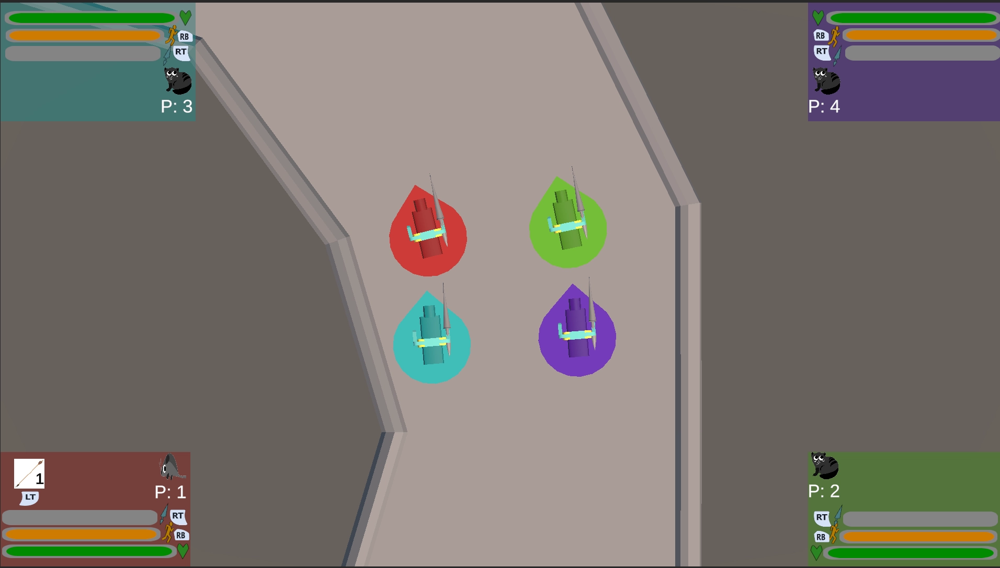
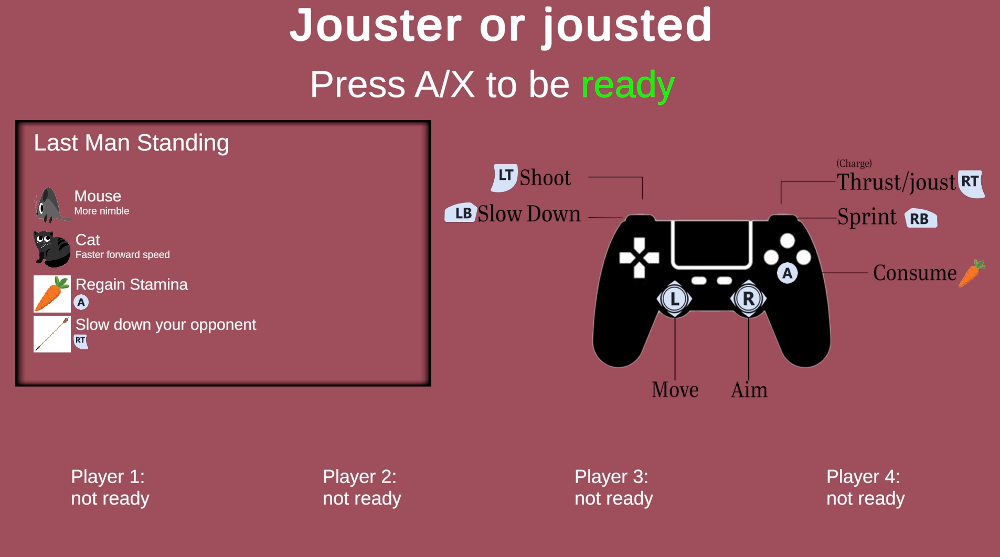

Project
Jousted or Jouster
Jouster or Jousted is a group project where 2-4 players battle against each other and try to be the last one standing.



About the project
This is a controller-only game. Keyboard and mouse are not supported.
Key Contributions:
- Local multiplayer setup
- Movement system
- UI
- Sounds and particle effects
Colleagues:
- Wannes François
- Senne lenearts
- Berten
This was made for the Game design 1 exam.
← Back to projects